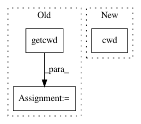

97e3c869f0b4676384059dd6efe57a1628f7dcaa,src/python/pants/testutil/engine/util.py,,create_scheduler,#Any#Any#Any#Any#,212
Before Change
def create_scheduler(rules, union_rules=None, validate=True, native=None):
Create a Scheduler.
native = native or init_native()
tree = FileSystemProjectTree(os.getcwd())
return Scheduler(
native=native,
ignore_patterns=tree.ignore_patterns,
use_gitignore=False,
After Change
native=native,
ignore_patterns=[],
use_gitignore=False,
build_root=str(Path.cwd()),
local_store_dir="./.pants.d",
local_execution_root_dir="./.pants.d",
rules=rules,
In pattern: SUPERPATTERN
Frequency: 3
Non-data size: 3
Instances
Project Name: pantsbuild/pants
Commit Name: 97e3c869f0b4676384059dd6efe57a1628f7dcaa
Time: 2020-05-20
Author: 14852634+Eric-Arellano@users.noreply.github.com
File Name: src/python/pants/testutil/engine/util.py
Class Name:
Method Name: create_scheduler
Project Name: ilastik/ilastik
Commit Name: 06103f990e84cf1a14cb0eb9cc11e114bb8052c2
Time: 2020-04-29
Author: tom.fogaca@gmail.com
File Name: ilastik/applets/dataSelection/opDataSelection.py
Class Name: DatasetInfo
Method Name: expand_path
Project Name: vatlab/SoS
Commit Name: 7abe62996997823e6a5894791b1806d9803e0942
Time: 2019-04-14
Author: ben.bog@gmail.com
File Name: src/sos/executor_utils.py
Class Name:
Method Name: create_task